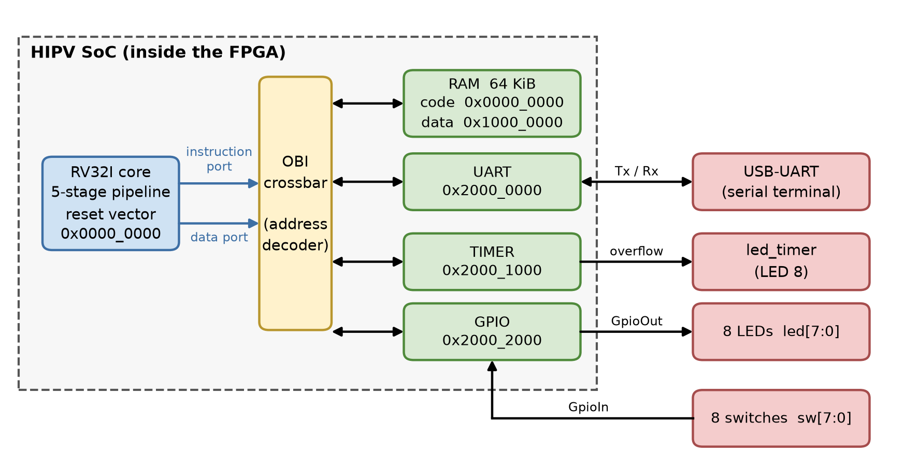

7 Seventh laboratory exercise: HIPV SoC tutorial
In this exercise you meet the HIPV SoC: a small RISC-V computer that runs on your Nexys A7 board. You will find where its code lives, write a C program for it, build that program, run it first in simulation and then on the FPGA, and watch it blink the LEDs and talk over the UART.
Until now every design in this course was hardware that you described in SystemVerilog. This time the hardware is already written. What you write is software: a C program that the processor executes.
7.1 Software and firmware
Two words are used throughout this chapter:
- Software is the C code you write, together with the toolchain that compiles it. It lives in the
sw/directory of the HIPV repository. - Firmware is the finished memory image (
firmware.hex) that is built into the FPGA bitstream. After the build, the program is part of the hardware, much like the program of a router or a microcontroller.
You write software, and the build turns it into firmware.
7.2 The HIPV SoC
HIPV is a system on chip (SoC): a processor, memory and peripherals connected by a bus, all inside one FPGA. Figure 7.1 shows the parts.

- The core executes the RV32I instruction set (32-bit RISC-V, integer instructions only) in a five-stage pipeline.
- The crossbar routes the core’s two bus ports, one for instructions and one for data, to the right peripheral, based on the address.
- The RAM holds both the program and its data. It is initialized with the firmware when the FPGA is configured.
- The UART, timer and GPIO are the peripherals. The program uses them by reading and writing addresses, which is called memory-mapped I/O.
On the board, the GPIO connects to the 8 slide switches and the 8 LEDs, and the UART connects to the USB cable that you also use to program the board.
7.3 Step 1: Get the project and the tools
Clone the HIPV repository:
git clone https://github.com/RatkoFri/HIPV-SoC.git
cd HIPV-SoCYou need the tools from the first exercise (Anvil, sv2v, openFPGALoader) and a RISC-V compiler (riscv64-unknown-elf-gcc). How you get them depends on your computer:
| Your computer | Recommended setup |
|---|---|
| Ubuntu / Linux | Install the tools natively (gcc-riscv64-unknown-elf is the Debian and Ubuntu package name), or use the Docker image. Everything, including programming the board, works from the same terminal. |
| macOS and Windows with WSL | Use the Docker image to build, and program the board from the host. See the box below. |
The repository provides a Docker image that contains all the tools. Every make target in this chapter can be run inside the container by prefixing it with docker-, for example make docker-sw APP=blink. Build the image once with make docker-build; it downloads several gigabytes. See README.md in the repository for details.
Docker on macOS and on Windows runs containers inside a virtual machine, and that machine cannot reach USB devices. The container can therefore build the firmware and the bitstream, but it cannot program the board. The workaround is to split the flow in two. The commands are the same on macOS and in a WSL terminal:
Build inside the container:
make docker-fpga APP=blinkProgram the board from the host with
openFPGALoader, outside the container:brew install openfpgaloader # macOS, once make program-hostOn WSL, install
openFPGALoaderin your WSL distribution instead of usingbrew, and forward the board’s USB connection to WSL first (the WSL only steps in the first exercise). WSL does not see USB devices on its own.
In the rest of this chapter, replace make APP=blink all with the two commands above, and likewise for your own program. Compiling (make APP=blink sw) and simulation (make run) need no USB, so they work unchanged in the container.
7.3.1 Where things are
| Directory | What is there |
|---|---|
rtl/ |
SystemVerilog source of the SoC: core/, interconnect/, mem/, periph/, top/ |
config/ |
Packages with parameters and the address map (hipv_soc_pkg.sv) |
sw/ |
Software: the board support package (bsp/), the linker script (link.ld) and example programs (examples/) |
fpga/anvil/ |
The FPGA top level (top.sv), the clock block and the pin constraints (.xdc) |
scripts/ |
The build flow (anvil_flow.py) and the tool that converts a binary into a memory image (mkmem.py) |
tb/ |
Testbenches and the simulation of whole programs |
docs/ |
Documentation of the core, the bus, the memory and the FPGA flow |
This exercise touches only sw/. The other directories are there to read.
7.4 Step 2: Memory map and peripherals
The processor sees everything as addresses. Table 7.1 lists the address map from config/hipv_soc_pkg.sv.
| Block | Base address | Size |
|---|---|---|
| Code window (RAM) | 0x0000_0000 |
64 KiB |
| Data window (RAM) | 0x1000_0000 |
64 KiB |
| UART | 0x2000_0000 |
4 KiB |
| Timer | 0x2000_1000 |
4 KiB |
| GPIO | 0x2000_2000 |
4 KiB |
The code window and the data window are two views of the same physical RAM. The core fetches instructions through the first and accesses data through the second. The linker script keeps code and data in different parts of it.
The registers that the exercise uses are listed in Table 7.2. The complete list is in sw/bsp/hipv.h.
| Register | Address | Meaning |
|---|---|---|
GPIO_OUT |
0x2000_2000 |
Drives the LEDs. Can be read back. |
GPIO_IN |
0x2000_2004 |
The state of the switches. |
UART_TX |
0x2000_0008 |
Writing a byte starts sending it. |
UART_STATUS |
0x2000_0010 |
Bit 0 is set when the transmitter is idle. |
In C, a register is a volatile pointer dereference. In sw/bsp/hipv.h:
#define REG32(addr) (*(volatile uint32_t *)(addr))
#define GPIO_OUT REG32(GPIO_BASE + 0x00)So the C statement GPIO_OUT = 0xFF; is nothing more than a store word instruction to address 0x2000_2000. That store goes through the crossbar to the GPIO, which turns on the LEDs.
You will rarely use the registers directly. The board support package (BSP, sw/bsp/bsp.h) wraps them in small functions:
| Function | What it does |
|---|---|
uart_init(baud) |
Sets the UART speed |
uart_putc(c), uart_puts(s) |
Send a character, send a string |
print_hex8(v) |
Send a byte as two hexadecimal digits |
print_udec(v) |
Send an unsigned number in decimal |
gpio_write(v) |
Write the LEDs |
gpio_read_in() |
Read the switches |
timer_start() |
Start the free-running 64-bit timer |
delay_cycles(n) |
Wait for n clock cycles |
There is no C library. You cannot call printf, malloc or strlen, and the BSP is all the support there is.
7.5 Step 3: The software side
7.5.1 The example program
Open sw/examples/blink/main.c. After the comments it is only a few lines:
int main(void)
{
uart_init(BAUD);
timer_start();
while (1) {
uart_puts("blink\n");
for (int step = 0; step < STEPS; step++) {
uint32_t pattern = 1u << step;
gpio_write(pattern);
print_hex8((uint8_t)pattern);
uart_putc('\n');
delay_cycles(DELAY_CYCLES);
}
}
}It moves one lit LED across the board and prints the pattern for each step. The directory sw/examples/blink/ contains only three files: main.c, a two-line Makefile that names the program and includes the shared rules in sw/rules.mk, and expected.txt, the output that simulation checks.
7.5.2 Building
cd sw/examples/blink
makeThe build leaves its products in build/:
| File | Content |
|---|---|
blink.elf |
The linked program with symbols |
blink.bin |
The raw machine code and data |
blink.hex |
The same, as a memory image: one 32-bit word per line, as hexadecimal text |
blink.lst |
The disassembly, with the C source interleaved |
blink.map |
Where the linker placed everything |
The .hex file is the firmware. The RAM in the SoC is initialized from it, as you will see in Step 5.
7.5.3 What happens before main
Look at sw/link.ld and sw/bsp/crt0.S. The linker script places the code (.text) at address 0x0000_0000, because the core starts executing at address 0 after reset. The data and the stack go into the data window. The start-up code crt0.S runs first. It sets the stack pointer, clears the uninitialized variables (.bss), and calls main.
Unlike on a PC, nothing loads the program. It is already in the RAM when the FPGA starts, so no copying of initialized variables is needed.
7.5.4 Reading the disassembly
Open build/blink.lst and find the call to gpio_write. You will see something like:
lui a5,0x20002 # a5 = 0x2000_2000, the GPIO base
sw a0,0(a5) # store the pattern into GPIO_OUTThat is the whole connection between the C program and the LEDs: a store to a particular address. The exact instructions depend on the compiler.
7.6 Step 4: Run it in simulation first
Synthesizing for the FPGA takes minutes, so it is a slow way to find a bug. The repository can also run a program in a simulation of the whole SoC. From the example directory:
make runThe simulator boots the SoC with build/blink.hex as the RAM contents, watches the UART output pin, decodes the serial frames into characters and compares them to expected.txt. The run is long because every character takes thousands of clock cycles.
Use simulation for logic errors, such as wrong output text, and the board for what only the board can show, such as the real timing and the switches.
7.7 Step 5: From firmware to the FPGA
On the board, the build flow takes the firmware, builds the SoC with it and programs the FPGA. From the root of the repository:
make APP=blink all(On macOS and WSL, use the two-step flow from the box in Step 1 instead.)
APP is the name of a directory in sw/examples/. The all target runs three stages, which you can also run one by one:
| Command | What it does |
|---|---|
make APP=blink sw |
Compiles the software into blink.hex |
make APP=blink fpga |
Builds the bitstream with blink.hex as the RAM contents |
make APP=blink program |
Programs the board with the existing bitstream |
The default board is the Nexys A7-100T. If you have the Nexys A7-50T, add BOARD=nexys-50t.
Open a serial terminal on the board’s USB serial port with 19200 baud, 8 data bits, no parity, 1 stop bit. The name of the port depends on your system. Check which new device appears when you plug the board in:
| System | Port | Terminal program |
|---|---|---|
| Linux and WSL | /dev/ttyUSB1 or similar |
screen /dev/ttyUSB1 19200 (leave screen with Ctrl-A, then D) |
| macOS | /dev/cu.usbserial-... |
screen /dev/cu.usbserial-XXX1 19200 (leave screen with Ctrl-A, then K) |
On Windows the serial port belongs to Windows, not to WSL, so open the terminal there even if you built the firmware in WSL.
You should see blink followed by the changing patterns, and the LEDs should chase one another at one step per second.
7.7.1 What is different from a normal program
Compare this to a PC, or to the Microblaze flow of earlier years, where a program was downloaded to the running system:
- The firmware is part of the bitstream. The RAM is initialized with
blink.hexwhile the FPGA is configured (theINIT_FILEparameter of the RAM). There is no separate program download. - Every change to the C program means a new bitstream, and so another synthesis run. This is why simulation first is worth the time.
- The clock must match. The software knows the clock frequency from
CPU_HZ(50 MHz by default, which is what the SoC runs at) and uses it to compute the UART speed and the delays. If you change the clock in the hardware, you have to give the sameCPU_HZto the software build. A mismatch does not stop the build. It shows up as garbled text in the terminal and wrong delays.
7.8 Laboratory exercise
Write a program that runs forever, and once per second:
- toggles all eight LEDs (all on, then all off, and so on), and
- reads the eight switches and prints the state of both on one line over the UART.
A line of the output looks like this:
LED=FF SW=A5
LED=00 SW=A5
LED=FF SW=A17.8.1 Steps
Create a directory for your program inside
sw/examples/, and copy the starter files main.c and Makefile into it:mkdir sw/examples/lab07 cp main.c Makefile sw/examples/lab07/The
Makefileexpects to be one level belowsw/examples/, like the other examples.Complete the three
TODOitems inmain.c. The functions you need are in the table in Step 2.- For the toggle, remember that the GPIO output register should always be written a full word at a time.
print_hex8takes auint8_t, so cast the 32-bit values.
Build and try it in the simulator. In
main.c, temporarily setDELAY_CYCLESto a small value such as1000(a full second is too long to simulate), then runmake runinsw/examples/lab07. There is noexpected.txtfor this program, so the run only prints what the program sent over the UART. In simulation the switches are not pressed, so expectSW=00. SetDELAY_CYCLESback toCPU_HZbefore going on.Run it on the board from the repository root:
make APP=lab07 all. Open the serial terminal, move the switches, and check that the printedSW=value follows them within a second.
7.8.2 Questions
- What is the address of the register that
gpio_writewrites to? Find the matching store instruction inbuild/lab07.lstand write down the instructions the compiler generated for it. - How many instructions does your main loop contain? Look at the listing. The core needs about three clock cycles per instruction. How long does one pass take apart from the
delay_cyclescall? Is it significant compared to the one-second delay? - What would happen if you changed
CPU_HZin theMakefileto100000000but did not change the hardware? Why does the build not report an error? - After you change one constant in
main.c, which steps of the flow have to be repeated for the change to show up on the board?
7.8.3 Optional extensions
- Print the switches in binary instead of hexadecimal (eight
0and1characters). - Let the switches choose the behavior: for example,
SW[0]stops the toggling, andSW[2:1]selects the period (0.25, 0.5, 1 or 2 seconds). - Use
timer_get()to print the time since start-up in each line. - Read
docs/ADDING_A_SLAVE.mdin the repository and sketch how you would add a new peripheral, such as a seven-segment display, to the SoC.